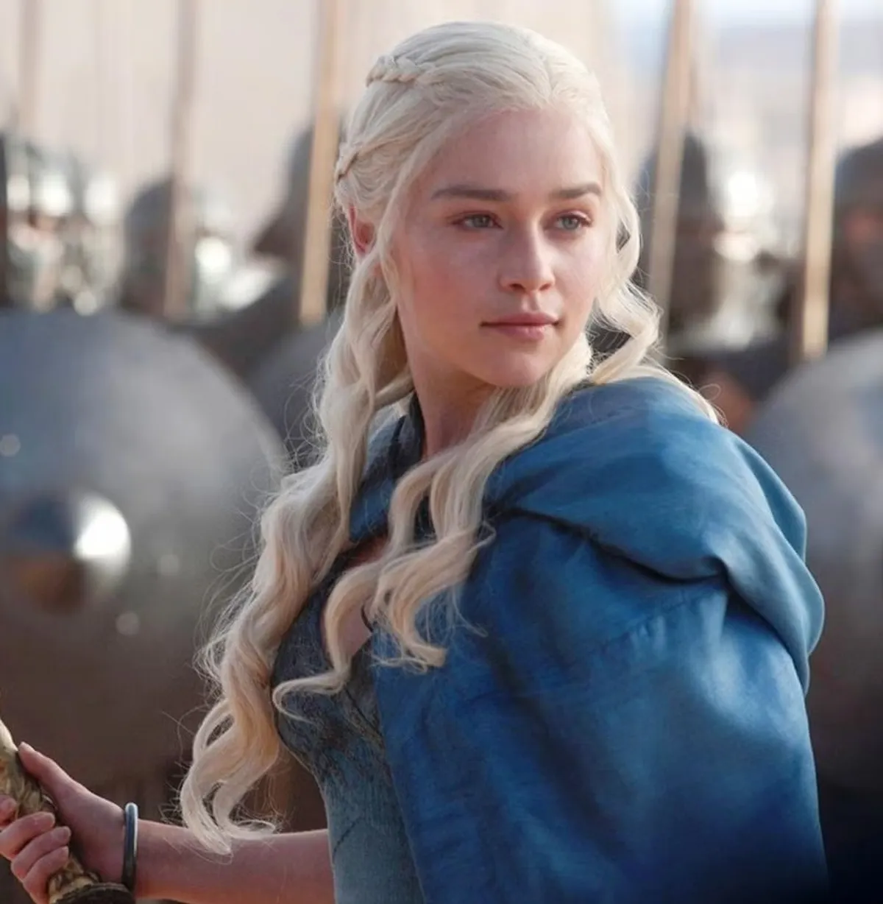
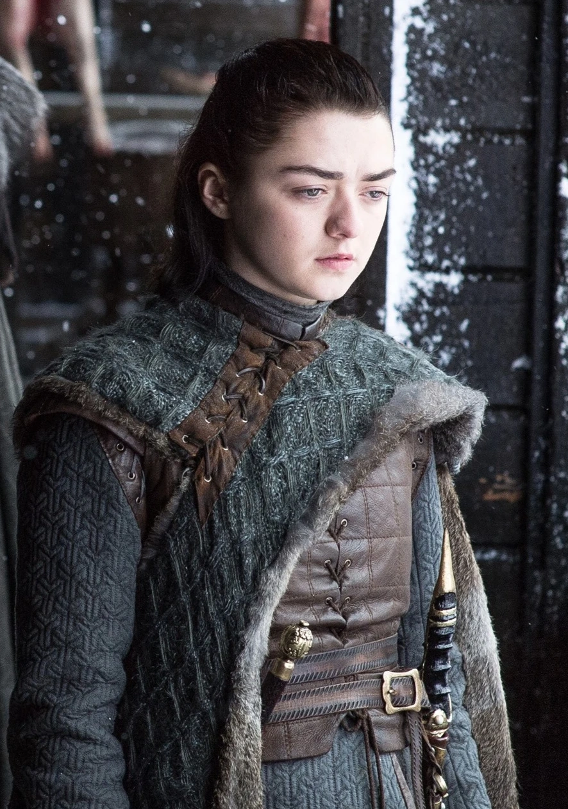
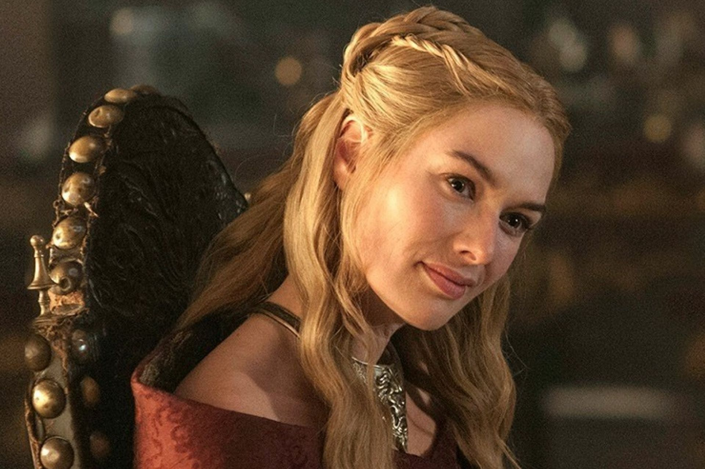

Main Characters
Jon Snow

Jon Snow is the quiet, thoughtful type who always seems to carry the weight of the world on his shoulders.
Raised as Ned Stark's illegitimate son, he's loyal, brave and stubborn even when it gets him in trouble.
He's the kind of person you root for, even when he's brooding in the cold.
Daenerys Targaryen

Daenerys is fierce and stubborn, always chasing a world where no one is oppressed.
She's passionate and sometimes impulsive, driven by both anger and hope.
Even with all her power, she's searching for a place where she truly belongs.
Arya Stark

Arya is fierce, independent, and doesn`t care much for rules.
She's quiet but deadly, carrying a list of people she won't forget.
Deep down, she's loyal to her family and fiercely protective of those she loves.
Cersei Lannister

Cersei is ruthless, cunning, and fiercely protective of her children, willing to crush anyone who stands in her way.
She's driven by ambition and a desire for power, always scheming and thinking several steps ahead.
Beneath her cold, calculating exterior, there's a mix of fear, resentment, and a deep need to control her own destiny.